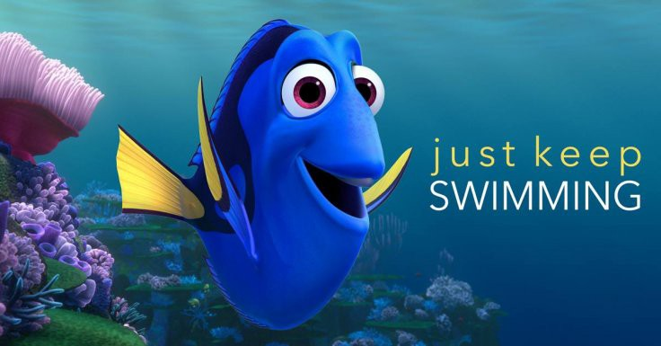

After graduating college i started my carreer at accenture right away. i'm not really sure what will happen, if i'm going to do good, if i will succeed on my field, and many random thoughts just keep on popping after one another. to be honest, my school wasn't really good. we lack facilities, experienced professor, and students sharing limited resources which results to either students not learning or students not having a chance to try. but i think that's what makes us different. we make everything out of nothing. we learn how to share because we know what is the feeling of having nothing.
Before Entering college, some of my friends had given me an advice or tips. "Hey, you're going to pursue IT right? Better sit next to a monster coder for you to live an easy life at school". but i never thought i will be the monster coder they were pertaining to. Every group activities they would want to be part of my group and it makes me really happy. since we're poor i ask for a member ship fee/charge and they are free to go. i could finish a project for an hour or a day. so school projects just keep on coming.
My Introduction is getting longer and i'm really sorry if i'm a bad writer. one last thing :) before graduating i've been a president of the Student Council in our Course which is great because i got accepted into a company as their intern. Internship is required before graduating college and i'm blessed to be part of an international organization and that is the start of my journey as a young IT Professional. i've been exposed to different roles in IT Industry, infact i'm an IT Security Intern. i handle SIEMS, Splunk, and Security Tools for Internal Protection. we notify employees who uses company resources in a wrong way. that's when i realized school is really different from the workplace.
Just to add up, even before the graduation date i have been passing my applications to companies and on the actual graduation date i got a call from an HR Personal and asking some things like "Hi is this bassi?, How are you? When will you graduate?" and i said "Hi, Yes I am, i'm good, how about you?, Actually I'm graduating right now". and the graduation march music started and we both laughed. before we end the call he continued "So when will you be avaible for a job interview?" at time, i was really frozen. i just said a date continued to walk. we both agreed on the date and i think that's it on that part.
To fast forward, i got the job and it was the only interview i've attended. i'm happy because it is my dream company and job. so the first day started i've met a lot of people. and boot camps we're started. i'm really happy because i rank the second on a JAVA Bootcamp and First on a Oracle Bootcamp. Things like that is really important and crucial for the job so they offered that bootcamps to newly hires. if only this kind of things can be learned at school. we can really say colleges produce work ready individuals but no.
I didn't know what happened. but i got separated with my friends on the boot camp. we were deployed on our first project and i'm the only one who doesn't have a colleague i know. my role wasn't really sure also. 2-3 months i keep on complaining for what i have been doing. i'm a programmer at heart so i really wish i could do codings and stuffs like that. i did have a short session with my carreer councilor and she helped me a lot. i was about to resigned because each day it gets really hard. there was a time that i cried on my manager while in a call. "it's just so hard, i'm the only one here at offshore i don't have any team mates i could ask." i said.
so to answer the question above? am i on the right track? are we on the right track? i don't know :) who will decide if you are in the right track? it's you even if you don't want what you do, you too have to put efforts so that you can run at the track at the same pace like others. right now i'm a DevOps Engineer who integrates applications to the CI and CD Pipeline for deployment automation. at first i was mad / sad because i didn't wanted this. but the time goes by i started to love this job :) i had a new team off-shore and they're my seniors. however, i'm the one who kinda trains them because they're new as well. just keep swimming and focus on the good :)
